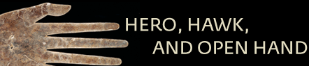

| |
||||
|  | |||
|
INTRODUCTION Hero, Hawk, and Open Hand: American Indian Art of the Ancient Midwest and South is a full-scale exploration of the art, architecture, and ritual performance of a major branch of early civilization in the Americas virtually unknown to the public—that of the midwestern and southern United States. This groundbreaking exhibition takes a look at the “moundbuilder” societies that began developing c. 3000 B.C. and continued to evolve before the westward trek of European and American explorers, beginning in the 16th century A.D. The visual art and symbolism of these ancient peoples is illuminated by an array of more than 300 works of stone, ceramic, wood, shell, and copper created between 5000 B.C. and A.D. 1600. These works can be seen in a rich environment enhanced by informative, large-scale plans and reconstruction drawings of major archaeological sites. The hero, the hawk, and the open hand are among many recurrent forms of visual imagery seen across time and shared by various cultures. Hero, Hawk, and Open Hand seeks an understanding of the way different societies defined themselves and their environment through the symbolism and expressive power of art, architecture, and ritual performance. The approach of the exhibition—to identify and interpret dominant forms of symbolic and aesthetic expression by outlining patterns of thought, ideas, and visual imagery in the formation and maintenance of ancient societies—complements information developed thus far by archaeology. Hero, Hawk, and Open Hand takes up the problem of understanding the role of intellectual, spiritual, and artistic life in the evolution of early societies in the Midwest and South and their connections with traditional life in the tribes of today. This approach assumes that in the ancient Midwest and South, as in other areas in the Americas, there was considerable ethnic and linguistic diversity, distinctive local history and cultural variety, and a great diversity of art and architecture, yet these various societies also seem to be linked by a fundamental similarity and display a basic shared cultural tradition. Peoples of this major cultural tradition participated in a mode of thought that found order, coherence, and meaning in the integration of human society and the larger structure of the natural environment. Chiefs, priests, and other leaders had the obligation, through religious practices linked to economic activities, to ensure the regular progression of the seasons, the fertility of the soil, the abundance of plants and animals, and the prosperity and integrity of their communities from year to year. These obligations were reflected in the visual symbolic imagery of art, architecture, and ritual performance. There is an extraordinary record of cultural continuity and change that can be linked to the archaeological data and works of art as a means of recovering their unfamiliar imagery, identifying their possible meanings and functions, and approaching the mind of the ancient society. Works of art, architecture, and ritual have their own visual “texts,” speaking of themes that were also recorded and transmitted in early oral traditions and later recorded in colonial historical accounts and more recent ethnographic reports and often persisting in traditional beliefs and ceremonial life among the tribes of today, may not be recorded in written records. Hero, Hawk, and Open Hand explores a framework of themes outlined in the visual arts and other sources over a 3,000-year span of time as a vital part of the cultural history of our indigenous peoples and our nation’s collective heritage. back to top COSMIC AND SOCIAL ORDER The peoples of the ancient Midwest and South considered themselves to be participating in a network of connections that spread outward from their communities into the life of animals and plants, leading to the natural powers manifested in rivers, rocks, mountains, the earth and the sky, and to the gods and all-powerful forces of life, death, and renewal. The organization and activities of human society were intimately bound to this web of life forces residing in the natural environment. The periodic cycles of the sun, moon, planets and stars were observed as the most predictable phenomena on which to base calendars and annual ceremonies for planting, hunting, and war. Similar correlations were made between other aspects of cosmological order and the organization of human societies. These correlations could be symbolically expressed through animal imagery, as seen in an engraved circular palette with hand-and-eye motif and intertwined serpents. The mysterious imagery of this disk formed part of a system of cosmological signs connecting the leaders of Moundville, Alabama, to their ancestors. The archaeological site of Moundville may well be an ancestral seat of the Choctaw Indians today. The design on the disk represents a doorway to the Path of Souls, a place where souls of the dead gather on their way to becoming stars of the Milky Way. The people of Moundville saw the hand-and-eye image in the night sky as the constellation known to us as Orion. back to top THE HUNT AND THE ANIMAL POWERS Early hunters and gatherers faced the psychological and physical dangers of daily life by sharpening their skills in the chase and performing rites that imbued them and their implements with magical and religious properties. Such preoccupations may account for the enigmatic atlatl weights—bannerstones, birdstones, and boatstones—widely found throughout the Midwest and the South. Made of shaped and polished quartzes, banded claystones, and other colorful materials, these minimal geometric forms were clearly highly valued. They functioned as weights for spear-throwers (atlatls). Spears were the primary weapon used before the bow and arrow. The refined craftsmanship and costly materials suggest that bannerstones served as emblems of prestige and status conferred upon hunters and warriors coming of age, as supernatural charms for increasing the spear-thrower’s effectiveness, and perhaps also as emblems of clans or other social units. In the world of hunters and gatherers, animals were seen as more than sources of food and useful materials. Because they have special instincts and properties that humans do not possess, and because they inhabit wild landscapes beyond the familiar settled environment, animals were perceived to be closer to the dangerous, all-powerful beings and forces upon which life and death depended. Intersecting the sacred and the everyday, animals acted as intermediaries for humans. People therefore favored certain animals in order to become more effective in hunting, warfare, and healing. Bonds between animals and humans are undoubtedly affirmed by animal effigy mounds or by effigy pipes. The fundamental purpose of pipe smoking was religious, for the offering of smoke was, and still is, a traditional form of prayer. Hopewell “platform” pipes, such as the hawk effigy platform pipe, are each carved with a miniature animal in anatomical detail, standing on a flat, slightly arched base. These pipes, which include many species of birds, bears, raccoons, otters, wolves, and other animals, almost certainly were owned by leaders of family lineages or clans. back to top GODS AND HEROES The rich mythic heritage of tribes is filled with accounts of origins, the adventures of deities and supernatural heroes and heroines, animal tricksters, vision quests, and the creation and end of the world. Supernatural characters and events are also represented in the ancient visual arts. Yet the identity of some figures, particularly those from the earliest periods, remain a mystery. On the other hand, archaeological monuments such as those at Cahokia and Spiro and other Mississippian locations, have yielded images that are identifiable through historically recorded myths. An engraved whelk shell with intertwined snake-men depicts twin figures with intertwined serpent tails, springing from a coiled serpent/raccoon that symbolizes the earth. This shell is engraved with a representation of the twins, who appear in different guises throughout North America and Mesoamerica. The mythical scene surely illustrates an event in the time of origins, where the ritual death and resurrection of the twins portray a duality of opposing forces that must be balanced. They are shown springing into the sky, where one is associated with thunder and the other can cause lightning. Another heroic figure, Birdman, is a dominating image in ritual imagery. An engraved whelk shell depicting Birdman shows the hero as a warrior figure with falcon markings. Birdman is often shown wearing elaborate ornaments in his hair, and the regalia shown on this engraved shell also appears on figures identified as the hero Morningstar, also known as Redhorn. back to top WORSHIP OF ANCESTORS The worship of ancestors is of primary importance in keeping unity and continuity between present and past generations. The most imposing archaeological sites feature monuments containing offerings with imagery attesting to the status, office, and achievements of important historical ancestors and legendary founders of clans or lineages. Such monuments represented continuity and were visited for commemorative gatherings and feasts, as reminders that the community did not consist of living alone but the living and dead together in making up the clan or lineage identity. The Etowah site, located in the northwestern corner of Georgia, is a complex arrangement of large mounds and plazas. A collection of finely crafted ceremonial objects has been recovered from the site’s principal mortuary, Mound C. These objects are associated with highly distinguished chiefs. Two imposing effigies once presided in the ancestral temple atop the mound. Carved of marble, the seated male and kneeling female figures lean slightly forward with wide, staring eyes, their upright torsos seemingly charged with tension and energy. Their stylized features are not portraits, but represent idealized ethnic types. The pair is thought to represent founders of a ruling lineage of an original creator couple, progenitors of humankind in the remote time of genesis. back to top THE OFFICE OF CHIEFS As part of the equipment of rulership, symbolic works, including ceremonial attire, accompanied leaders on their posthumous journeys to join their ancestor spirits. These works focused on various themes: the cosmological world, the world of the hunt and animal powers, natural elements and deities, the imagery of war and ceremonial weaponry, and depictions of warriors. Warfare characterized most chiefdoms. With the evolution of hierarchical societies and the rise of warrior chiefs, warfare became a way for a ruler to extend influence over neighboring chiefdoms and expand one’s financial and political base. In the world of ancient Mississippian societies, specific offices were inherited and filled by members of elite lineages and high-ranking clans. Ritual became an effective means for warrior chiefs and their councils both to legitimize their positions and to establish and maintain their social authority. In this context, works of art emphasized the status of warriors and indicated their broadly shared values and ethos. An extensive figural imagery was developed, concerned with emblems and representations of the ideal warrior hero. An effigy of a seated male figure, known as the hero Red Horn or Morningstar, is shown with a long braid of hair, the “horn” that was emblematic of his name. The desire of warrior chiefs to reinforce their social status was fundamentally linked to the imagery, myths, and rituals that showcased their military exploits. It seems likely that names of mythic heroes were taken as titles by rulers. Their authority was portrayed as stemming from the heroic events and personages described in legendary history and myth. A systematic exploration of the points of engagement between art, architecture, and the system of seasonal rites and official rites of passage more fully explains how the peoples of the ancient Midwest and South employed the visual arts and ritual performance as vital elements in maintaining order, coherence, and continuity from one generation to the next. Throughout the exhibition catalogue and in the exhibition itself, Native Americans present their views of this ancient heritage, the loss of cultural traditions as well as land in the recent era of forced removals, reservations, and required government boarding-school educations in which their languages and histories were excluded, and the contemporary movements toward recovery and renaissance as we move into the 21st century. back to top |
| Last updated: July 2003. Best viewed with Netscape Navigator 4.0 or higher. Reproduction Permission. Copyright © 2003. All rights reserved. |